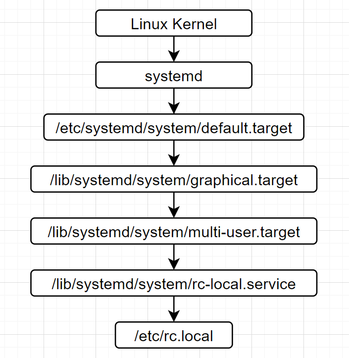

Systemd进程启动
分析Linux系统进程何启动起来
参考文档
https://www.raspberrypi.org/documentation/linux/usage/systemd.md
https://www.raspberrypi.org/documentation/linux/usage/rc-local.md
init真相
stat /sbin/init
File: /sbin/init -> /lib/systemd/systemd Size: 20 Blocks: 0 IO Block: 4096 symbolic link Device: b302h/45826d Inode: 286014 Links: 1 Access: (0777/lrwxrwxrwx) Uid: ( 0/ root) Gid: ( 0/ root) Access: 2021-01-11 13:31:33.086942487 +0000 Modify: 2020-12-10 00:18:16.000000000 +0000 Change: 2021-01-11 13:31:33.086942487 +0000 Birth: -
Systemd应用原理
在sysvinit中有明确定义的运行级别（如：0、1、3、5、6）与systemd中特定的 目标 存在一一对应的关系。然而，对于用户自定义运行级别（2、4）却没有。如需要同样功能，建议你以原有运行级别所对应的systemd目标为基础，新建一个/etc/systemd/system/<目标名>.target（可参考/usr/lib/systemd/system/graphical.target）, 然后创建目录/etc/systemd/system/<目标名>.wants，并向其中加入需启用的服务链接（指向/ur/lib/systemd/system/）。
“SysV 运行级别” 与 “systemd 目标” 对照表
SysV 运行级别 |
Systemd 目标 |
注释 |
|---|---|---|
0 |
runlevel0.target, poweroff.target |
中断系统（halt） |
1, s, single |
runlevel1.target, rescue.target |
单用户模式 |
2, 4 |
runlevel2.target, runlevel4.target, multi-user.target |
用户自定义运行级别，通常识别为级别3。 |
3 |
runlevel3.target, multi-user.target |
多用户，无图形界面。用户可以通过终端或网络登录。 |
5 |
runlevel5.target, graphical.target |
多用户，图形界面。继承级别3的服务，并启动图形界面服务。 |
6 |
runlevel6.target, reboot.target |
重启 |
emergency |
emergency.target |
急救模式（Emergency shell） |
systemctl get-default
graphical.target
cd /etc/systemd
find * -iname default.target
system/default.target
ls -al system/default.target
lrwxrwxrwx 1 root root 36 Jan 11 13:01 system/default.target -> /lib/systemd/system/graphical.target
cat /lib/systemd/system/graphical.target
# ...省略 [Unit] Description=Graphical Interface Documentation=man:systemd.special(7) Requires=multi-user.target Wants=display-manager.service Conflicts=rescue.service rescue.target After=multi-user.target rescue.service rescue.target display-manager.service AllowIsolate=yes
Requires=multi-user.target
rc.local启动分析
systemctl status rc.local
Warning: The unit file, source configuration file or drop-ins of rc-local.service changed on disk. Run 'systemctl daemon-reload' to reload units. ● rc-local.service - /etc/rc.local Compatibility Loaded: loaded (/lib/systemd/system/rc-local.service; enabled-runtime; vendor preset: enabled) Drop-In: /usr/lib/systemd/system/rc-local.service.d └─debian.conf /etc/systemd/system/rc-local.service.d └─ttyoutput.conf Active: active (exited) since Thu 2021-02-11 08:08:35 GMT; 6h ago Docs: man:systemd-rc-local-generator(8) Process: 461 ExecStart=/etc/rc.local start (code=exited, status=0/SUCCESS) Feb 11 08:08:35 raspberrypi systemd[1]: Starting /etc/rc.local Compatibility... Feb 11 08:08:35 raspberrypi systemd[1]: Started /etc/rc.local Compatibility.Loaded: loaded (/lib/systemd/system/rc-local.service; enabled-runtime; vendor preset: enabled)
/lib/systemd/system/rc-local.service
Active: active (exited) since Thu 2021-02-11 08:08:35 GMT; 6h ago

Wifi配置启动分析
/etc/systemd/system/multi-user.target.wants/raspberrypi-net-mods.service
[Unit] Description=Copy user wpa_supplicant.conf ConditionPathExists=/boot/wpa_supplicant.conf Before=dhcpcd.service After=systemd-rfkill.service [Service] Type=oneshot RemainAfterExit=yes ExecStart=/bin/mv /boot/wpa_supplicant.conf /etc/wpa_supplicant/wpa_supplicant.conf ExecStartPost=/bin/chmod 600 /etc/wpa_supplicant/wpa_supplicant.conf ExecStartPost=/usr/sbin/rfkill unblock wifi [Install] WantedBy=multi-user.target
SSH开启设置分析
/etc/systemd/system/multi-user.target.wants/sshswitch.service
[Unit] Description=Turn on SSH if /boot/ssh is present ConditionPathExistsGlob=/boot/ssh{,.txt} After=regenerate_ssh_host_keys.service [Service] Type=oneshot ExecStart=/bin/sh -c "systemctl enable --now ssh && rm -f /boot/ssh ; rm -f /boot/ssh.txt" [Install] WantedBy=multi-user.target